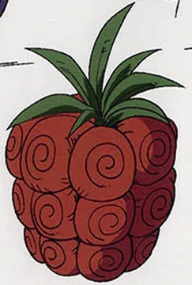
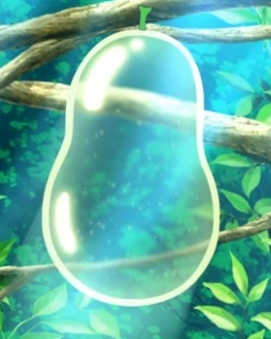
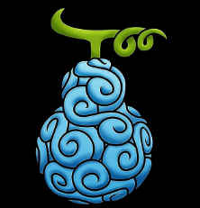
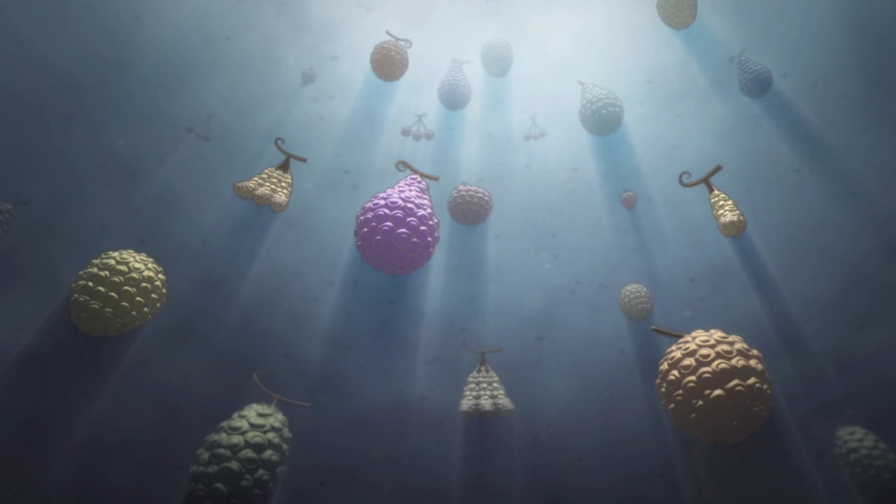

Tipos de Akuma No Mi

Ushi Ushi no Mi
(Zoan)
฿ 1000
Bara Bara no Mi
Bara Bara no Mi
(Paramecia)
฿ 1.000.000
Suke Suke no mi
Suke Suke no mi
(Paramecia)
฿ 50.000.000
Gura Gura no Mi
Gura Gura no Mi
(Paramecia)
฿ 1.000.000.000

Pika Pika no
Mi
(Logia)
฿ 3.000.000.000

Gomu Gomu no Mi
("Paramecia")
฿ 10.000.000.000
Avisos
|  | As Akuma no Mi, apesar de todos os seus atributos benéficos, têm várias desvantagens. Uma dessas desvantagens é que pouco se sabe sobre elas. Em alguns casos, sociedades inteiras podem não saber da existência das Akuma no Mi. Devido a esta falta de informação, algumas Akuma no Mi ainda são desconhecidas. A consequência mais proeminente de comer uma Akuma no Mi é a fraqueza em relação à água do mar: o mar odeia e rejeita os usuários de Akuma no Mi,fazendo com que eles fiquem fracos e indefesos enquanto submersos na água, fazendo com que eles afundem sem poderem nem se mexer. |